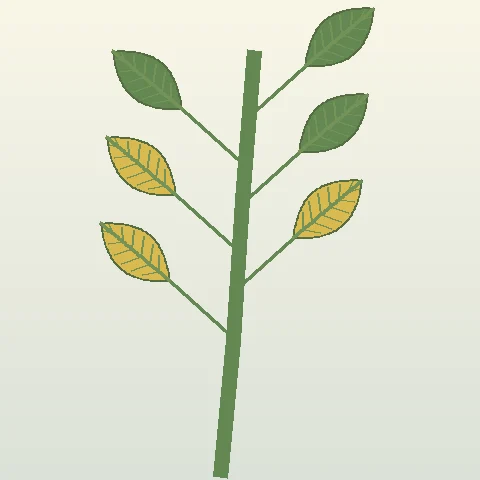

Waterlogging
Lower leaves yellow in wet soil
This is one possible explanation. Compare the signs below with those on your plant.

What to look for
Check the deeper mix for persistent wetness, the cachepot for trapped water and the upper leaves for changes.
Possible causes and next steps
Low root oxygen can affect leaf color. Empty trapped water and check moisture against the plant’s needs before watering.